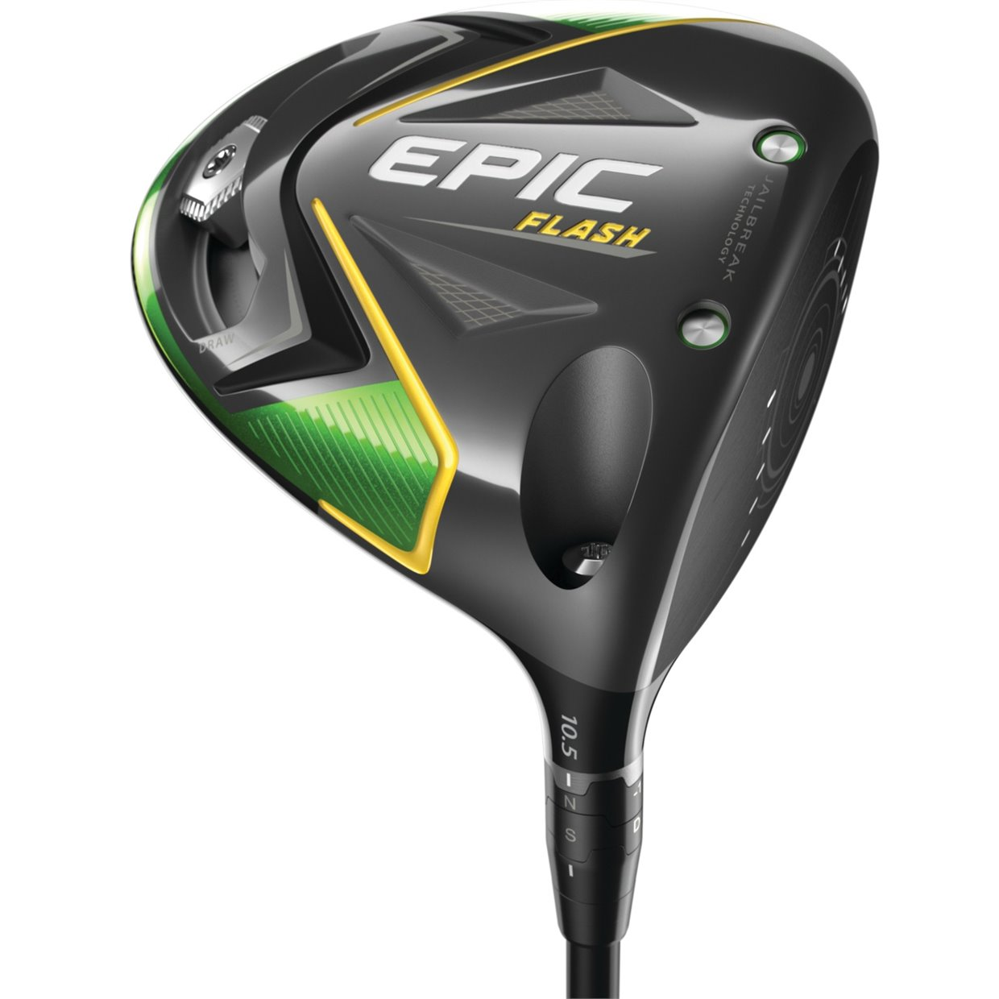
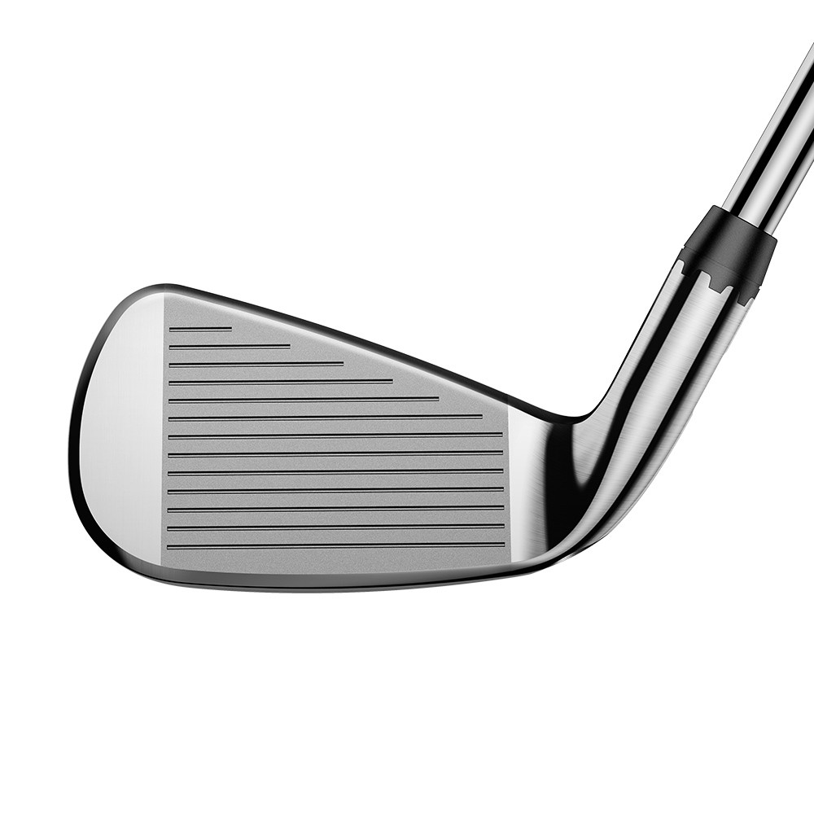
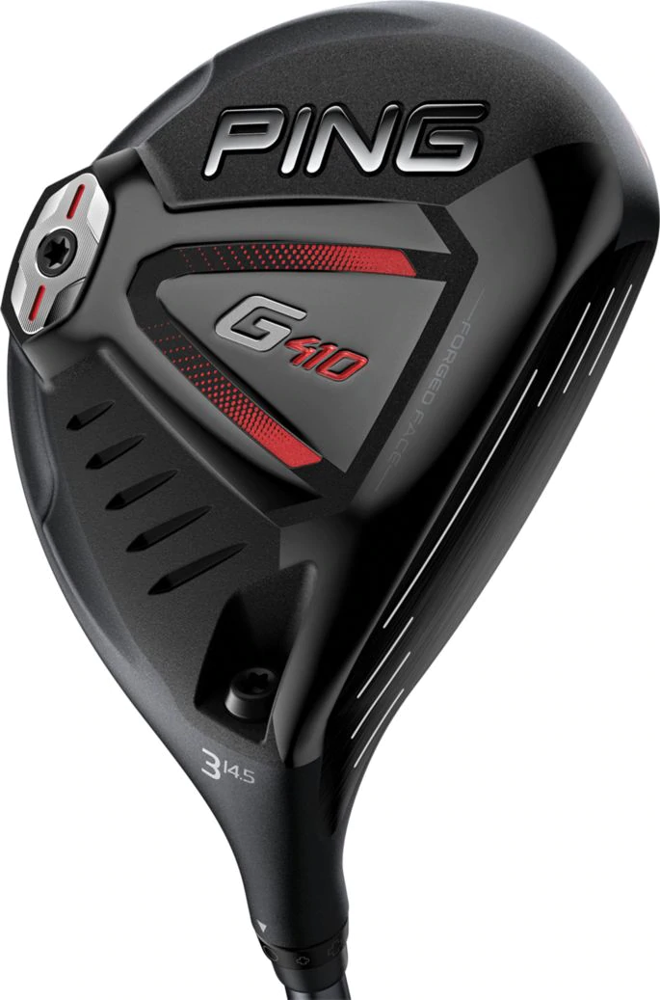
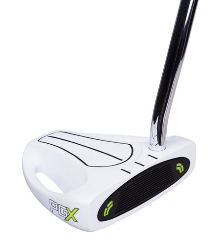

Driver - The driver is the longest club used exclusively for tee shots, as it produces maximum distance and height.

Irons - These clubs are for hitting shots from the fairway onto the green. Shots from long and medium irons travel farther, while short-iron shots fly higher but for a shorter distance. You also use short irons for chip shots from just off the green.

Fairway Woods - Use these for fairway shots that are beyond the range of your irons, and on tee shots when you need more control of the ball. They produce higher, softer shots than the driver and allow you to shape shots more easily.

Wedges - You use specialty wedges like sand, lob and gap wedges for short pitches from the fairway and blasting out of sand bunkers. Golfers often carry several wedges with different lofts and bounce angles for use from a variety of distances and lie conditions.
Putter - Putters are for use on or around green, the putting surface surrounding the hole. They have flat faces to keep the ball from bouncing up when you strike it.

Click the video below to learn more about different golf clubs and what they're used for!
See the table below for the average distances each club projects!